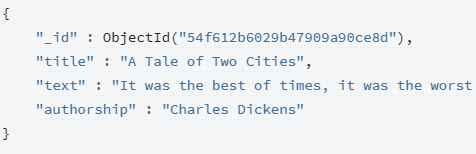
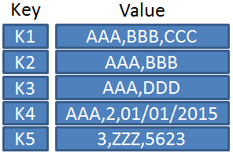
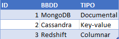
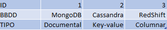

3. NoSQL
3.1. Bases de datos No SQL
3.1.1. ¿Qué son las bases de datos NoSQL?
Las bases de datos NoSQL (NoSQL significa "Not Only SQL" o "No Solo SQL") son sistemas de gestión de bases de datos diseñados para manejar tipos de datos y escenarios de aplicación que no se ajustan bien a las bases de datos relacionales tradicionales.
A diferencia de las bases de datos SQL, que utilizan un esquema fijo y tablas para almacenar datos, las bases de datos NoSQL utilizan diferentes modelos de datos y estructuras de almacenamiento flexibles.
3.1.2. Características de las bases de datos NoSQL:
-
Esquema flexible: NoSQL permite almacenar datos sin necesidad de un esquema predefinido.
-
Escalabilidad horizontal: Las bases de datos NoSQL están diseñadas para escalar horizontalmente.
-
Modelos de datos variados: Existen varios tipos de bases de datos NoSQL, incluyendo bases de datos de documentos, bases de datos de columnas, bases de datos clave-valor y bases de datos de grafos.
-
Alta disponibilidad: Las bases de datos NoSQL suelen garantizar la disponibilidad continua de los datos.
3.1.3. Ventajas de las bases de datos NoSQL:
-
Escalabilidad: Son ideales para aplicaciones web y móviles que requieren escalabilidad rápida y eficiente.
-
Flexibilidad: Pueden manejar datos no estructurados o semiestructurados.
-
Rendimiento: Ofrecen un rendimiento más rápido para ciertos tipos de consultas.
3.1.4. Desventajas de las bases de datos NoSQL:
-
Falta de estándares: La diversidad de modelos y sistemas NoSQL dificulta la elección y la migración entre sistemas.
-
Menos soporte para consultas complejas: No son ideales para aplicaciones que requieren operaciones complejas de tipo JOIN y agregación.
3.2. Tipos de bases de datos NoSQL:
3.2.1. Bases de datos de documentos:
- Almacenan datos en formato de documentos semiestructurados, como JSON o XML.
- Características:
- Una clave única para cada registro que normalmente suele ser un documento con una estructura simple como JSON o XML.
- Se apoya en la utilización de documentos para almacenar información.
- Los documentos se agrupan en colecciones.
- Modelado flexible, recomendado para aplicaciones web, móviles o rrss que varían constantemente.
- Escritura rápida y mayor rendimiento.

3.2.2. Bases de datos de clave-valor
- Almacenan datos comó pares clave y valor
- Características:
- En este tipo de modelos cada elemento tiene asociada una clave única
- Tiene asociada una clave única lo que permite un acceso muy rápido.
- Su objetivo es la escalabilidad y la disponibilidad.
- Operaciones básicas get, put, delete.
- Recomendado allí donde es necesario un acceso muy rápido en un volumen inmenso de datos.
- Sesiones
- E-shopping
- No existe un estándar para el manejo de datos.
- Un único método de acceso.

- Ejemplos:
3.2.3. Bases de datos columnas
- Almacenan datos en columnas en lugar de filas.
-
Características
- Cada entrada genera una columna
- Los datos están dispuestos uno debajo del otro
- Gira la BBDD orientada a filas

 - En el disco duro los datos se muestran de manera unidimensional:
- 1,MongoDB,Documental,2,Cassandra,Key-value..
- 1,2,3;MongoDB,Cassandra,Redshift…
- Aconsejado para evaluación en BigData
- Desaconsejado en aplicaciones transaccionales
-
Ejemplos:
3.2.4. Bases de datos de grafos
- Almacenan datos como nodos y relaciones.
-
Características.
- Representan la información con grafos:
- Nodos: propiedades de los datos.
- Aristas: relaciones entre los objetos.
- Utilizan algoritmos especiales para realizar las búsquedas:
- Búsqueda en profundidad: el siguiente nodo más profundo.
- Búsqueda en anchura: va moviéndose entre los niveles.
- Resultados en tiempo real.
- Estructuras flexibles y ágiles
- Difícil de escalar
- Representan la información con grafos:
-
Ejemplos:
Recuerda
Cada tipo de base de datos NoSQL tiene sus propias características y casos de uso específicos. La elección dependerá de las necesidades de tu proyecto.
3.3. DynamoDB
Amazon DynamoDB es un servicio de base de datos NoSQL administrado proporcionado por Amazon Web Services (AWS). Es un tipo de base de datos NoSQL que se ajusta a la categoría de bases de datos de clave-valor y de documentos.
3.3.1. Características
-
Modelo de datos de clave-valor:
- DynamoDB almacena datos en pares de clave-valor, donde cada elemento en la base de datos tiene una clave única que se utiliza para acceder a los datos.
- Las claves son sensibles a mayúsculas y minúsculas y se utilizan para buscar y recuperar datos.
-
Soporte para documentos y atributos anidados:
- Aunque DynamoDB utiliza un modelo de clave-valor, admite atributos anidados y permite almacenar datos complejos, lo que lo hace adecuado para aplicaciones que requieren estructuras de datos más complejas.
-
Características de seguridad y control de acceso:
- DynamoDB ofrece opciones de seguridad y control de acceso para proteger tus datos, incluyendo la integración con Identity and Access Management (IAM) de AWS.
-
Totalmente administrado:
- Como un servicio totalmente administrado, AWS se encarga de tareas como la implementación, la escalabilidad, la gestión de réplicas y la copia de seguridad de datos.
3.3.2. Estructura de la información en DynamoDB
Tablas: En DynamoDB, los datos se organizan en tablas. Cada tabla puede considerarse como un conjunto de elementos relacionados. Por ejemplo, si estás construyendo una aplicación de comercio electrónico, puedes tener una tabla para productos, una para pedidos, y otra para usuarios. Cada tabla es independiente y puede tener su propio esquema.
Elementos (o Items): Los elementos son las unidades básicas de datos en DynamoDB y se asemejan a las filas en una base de datos relacional. Cada elemento se almacena como un conjunto de atributos (columnas). No es necesario que todos los elementos en una tabla tengan el mismo conjunto de atributos, lo que le da una gran flexibilidad. Por ejemplo, en una tabla de productos, un elemento podría tener atributos como "nombre", "precio", "descripción", mientras que otro elemento podría tener "nombre", "precio" y "disponibilidad".
Clave Primaria: Cada elemento en DynamoDB debe tener una clave primaria que consiste en uno o dos componentes: clave de partición y opcionalmente una clave de ordenación (sort key). La clave de partición se utiliza para distribuir los elementos a través de múltiples particiones y garantizar una distribución equitativa de la carga. La clave de ordenación permite ordenar los elementos dentro de una partición. Esto es útil para realizar consultas específicas en un rango de claves.
La estructura de las tablas en DynamoDB es flexible y puede cambiar con el tiempo a medida que evolucionan los requisitos de tu aplicación. Puedes agregar o eliminar atributos de los elementos sin afectar a los elementos existentes en la tabla.
Ejemplo
Tabla: Usuarios
- Clave de Partición (Primary Key): ID del Usuario
- Atributos:
- Nombre
- Edad
- Dirección
En esta tabla, "ID del Usuario" es la clave de partición y se usa para distribuir los elementos. Los atributos son las columnas que almacenan información sobre cada usuario. Puedes realizar consultas para buscar usuarios por su ID, y los atributos te permiten almacenar información adicional sobre cada usuario.
Recuerda
DynamoDB no requiere un esquema fijo, por lo que puedes adaptar la estructura de tus tablas y elementos según las necesidades de tu aplicación a medida que evoluciona con el tiempo.
3.3.3. PartiQL
PartiQL es un lenguaje de consulta que se puede utilizar para interactuar con las tablas de DynamoDB. Ejemplos:
INSERT INTO "Alumnos" VALUE
{ 'Id_Alumno' : 1,
'Nombre' : 'Luis Garcia',
'Edad' : 30,
'Curso' : 'Primero'
}
INSERT INTO "Alumnos" VALUE
{ 'Id_Alumno' : 2,
'Nombre' : 'Jose Perez',
'Edad' : 23,
'Curso' : 'Primero',
'Sip' : 'A12345'
}
SELECT Id_Alumno, Nombre FROM "Alumnos" WHERE Id_Alumno = 1